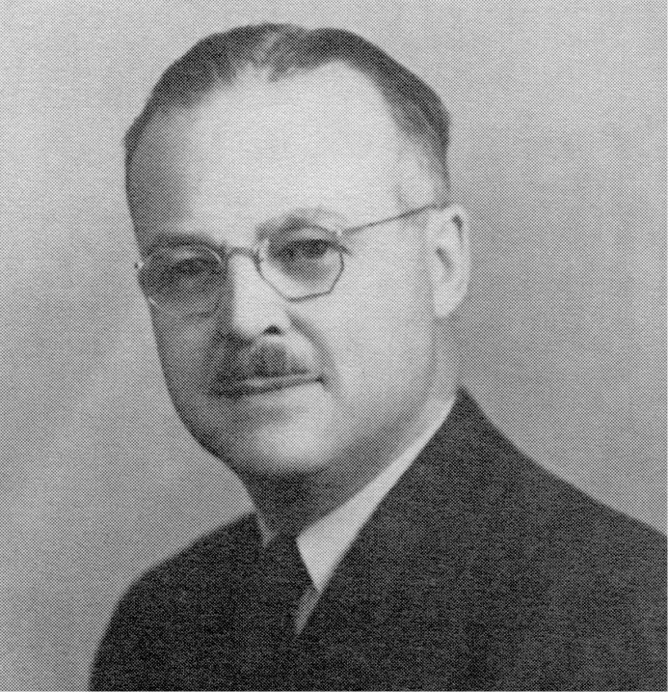

-1-MasterItem.svg)
Stories of Westminster United Church & its People / Page
141
notably by taking charge most capably of Spring Frolics which replaced the
Annual Tea of the former
U.C.W. (United Church Women.)
*The earlier 50-50 club was under the direction of people like Cecil and Eleanor
Lill, Red and Evelyn
Gay, Earl and Dot Chase, and Dave and Margaret Downie, Marguerite and Bill
Fawcett, Bruce and
Isobel Jones, Tom and Effie Dennis, Dr and Mrs. Howes.
**The latter club flourished under the leadership of people such as: Larry and
Mary Bennett(1947), Jim
and Betty Morrison (1948) Rhiney and Gabs Friesen (1949), Murray and Bonnie Kerr
(1950), Bruce and
Isabel Jones (1951), Bob and Millie Cawker (1952) to name a few.
Our thanks to Georgine Palmquist for the extensive research and writing that
resulted in this article.
Georgine’s parents were Bonnie and Murray Kerr, very active members in the 50-50 Club and
in the
life of our congregation.
The Actimist Club
The Club was formed in 1930 at the request of a group of 13 young men
recently graduated from the Sunday School program. Their request, made
to Reverend Bonnell, was that a club be formed for young men 17 years
of age up to age 21. The need, they said was to keep young men in
connection with the church, to ensure that the teachings and principles
of the Christian Church remained central in their lives.
Bonnell agreed with them and supported their request. Shortly thereafter,
a committee of the group approached a business man and a member of
the congregation, Stan Jones (photo) to be their leader. From the original 13,
membership grew as
new graduates from the Sunday School joined, and as did young men from other
churches with no
similar activity group. Eventually the group grew so large a new clubroom had to
be built in the
basement area of the church where they could meet.
Table
of Contents
Camps and Clubs
